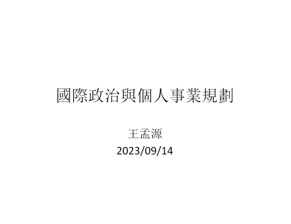
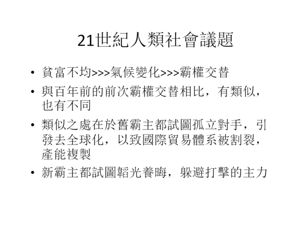
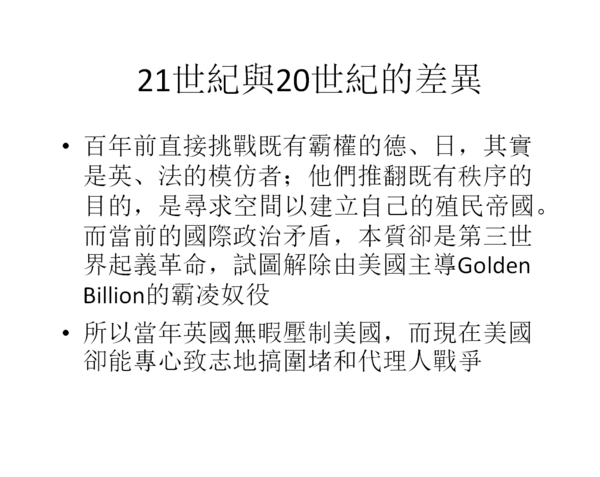
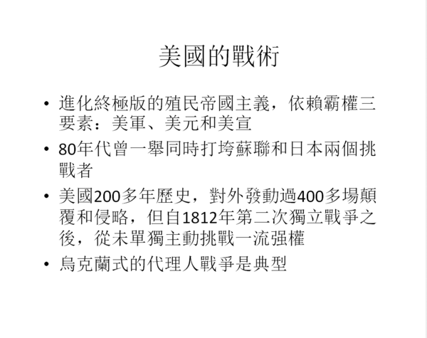
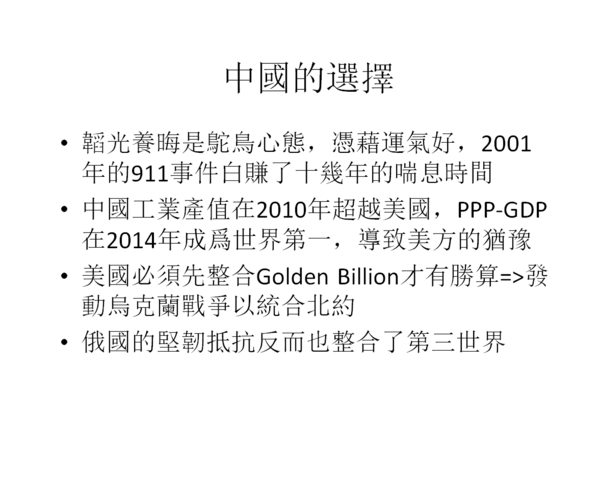
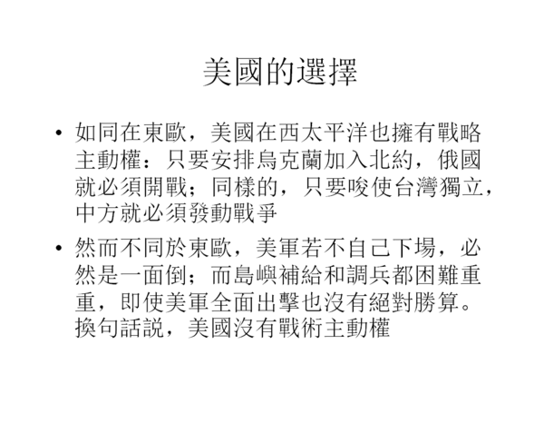
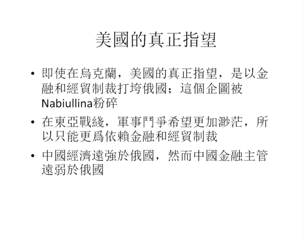
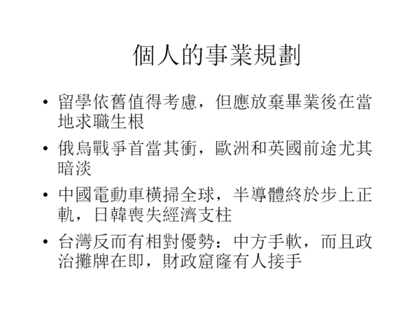
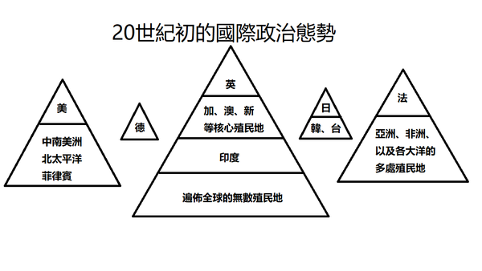
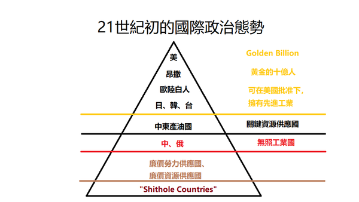

【國際】【戰略】國際政治與個人事業規劃
2023-09-17 07:45:00
原文网址：https://blog.udn.com/MengyuanWang/179876247

據稱有聽衆錄下演講過程，我已准許微博賬戶“王孟源dudu”轉發，這裏只做簡單的評論。

可與《23.09.15【觀點│龍行天下】王孟源真身開講：金磚峰會失敗！中國自我定位模糊不清！》節目中的圖片解釋相對照。

這裏的重點在於，百年前的霸權鬥爭是橫向的，而當前卻是縱向的（因而是大航海、殖民帝國興起以來500年未有的大變局）。既然美國已經在20世紀成功整合全世界，融爲一個無所不包的殖民金字塔體系，中國要韜光養晦、置身世外，不可能逃過美方的注意和打擊；讀者只要自問，英國霸主曾容許默認門羅主義一百多年，美國可曾對中國做成任何類似的承諾？那麽若非911事件在關鍵時刻巧合發生，近年無限升級的打壓當然會提早十幾年發生。

參考博客既有的無數討論。

參考前文《對俄烏戰爭的新觀察》及其留言欄中的討論。

事實上，應該說“美軍絕對沒有勝算”，頂多兩敗俱傷。不過這牽扯到大量的高層次軍事專業分析，我不想在演講過程中分心。

換句話說，人民銀行和其他金融決策監管單位，必須在備戰上達到比外交部和國防部更高的嚴厲層次。事實則剛好相反，他們正在迫不及待地引狼入室，甚至可能是在有意破壞國家出手的機會和資源，參見前文《我對引入美國投行的一些看法》以及所有關於替代美元的討論。

當前中國經濟遲緩，只不過是這場霸權爭奪戰海嘯中的一朵浪花。那些對積極備戰應對不屑一顧的人，若面臨收入損失卻必然是歇斯底裏的；尤其他們不但提不出也根本就不想提任何邏輯辯證，因此這種人非蠢即壞，是以噪音危害社會公益的蛀蟲。

參考博客對美國社會環境全面腐化的既有介紹。
【後註一，2023/09/17】老式殖民帝國和美式金融殖民帝國的差別，是瞭解當前國際政治局勢的關鍵，所以值得仔細討論；我將示意圖複製於下：


【後註三，2025/03/21】Vance剛剛坦承當年美國推動全球化，是指望在上圖所示的金字塔框架下進行的（參見《万斯说这话，让我有几点不吐不快》），只不過中俄原本應該乖乖地留在“廉價勞力/資源供應國”那一欄；他進一步認爲，“無照工業國”出乎意料的崛起速度和高度，是導致美國當前諸般問題的源頭，這正面印證了博客多年來分析所得認知框架中的美國心態。
3 条留言
还有，最近美国部分大学出现了反对以色列暴行的抗议，这会不会导致美国这次选举出现类似“柯文哲”的搅局者（RFK小肯尼迪似乎就是这样），有不少读者认为小肯尼迪吸川普的选票多过吸拜登的选票，民主党及其传媒集体可能会大力扶持鼓吹这些人。
还有就是俄乌战争在未来几个月会不会有什么大的动作，俄乌一方再次发动大规模进攻吗，还是会继续对峙？假如进攻了，对川普和拜登来说谁更有利？沉默对谁有利？
王先生觉得这些事会影响选举吗（现在还没发生，但是未来很几个月很可能发生）？王先生更看好谁？
Trump並不是真正的改革者，他只是出於政治素人的身份（參見博文《民主體制下的救世主情結》），還沒有和建制派正式合流罷了；一旦第二任期開始，沒有以後再次競選的需要，連僞裝都不必做了，他對猶太人的偏袒只會更甚於民主黨。所以現在的大學生示威抗議，對美國幕後大老闆之一的猶太金融勢力，純粹是清風拂山崗、明月照大江，一點實際影響都沒有。至於Kennedy Jr，反而因爲真正有心改革，主流媒體說什麽都不會去捧他。
俄國自2022年8月動員之後，一直堅決遵行同一條戰略路綫，也就是“積極消耗戰”“Active Attrition”，現在也不會改變。至於烏軍的全面崩潰，只能說是必然的，時間點卻不可能預先確定。這類似板塊之間相互運動，斷層的應力逐漸升高，時間到了自然會有地震；可以預見地震必然發生，但無法預定發生時間。
我看不出有什麽大幾率事件能改變大選的趨勢；小機率黑天鵝事件先天就是隨機的，空談無益。
最後，利用這個機會，談一下衆議院院長Johnson放行援烏法案一事。原本我在三月的《龍行天下》節目中，就想要提起這事的可能性，但時間不夠，剛好第二天座談會講類似的題材，就在那裏連同其他一些更深入的論點一並解釋過了，有興趣的讀者可以去找來看。這裏的背景是，共和黨在衆議院只剛剛過半數席位，而援烏法案卻是建制派的心頭肉，共和黨内部也有一半贊成，Johnson只能靠議事程序規則，先在共和黨黨團内部票決，防止法案進入全院投票議程，否則會有近3/4的贊成票。所以建制派就想出一個辦法，讓共和黨衆議員中對主流金主最忠誠的人主動提前退休，而且不是一般的提前宣佈選舉後離職，而是當場捲鋪蓋辭職不幹（所以這很明顯不是普通的個人事業決定，而是有特別的戰略考慮）；到了三月中，共和黨在衆議院的多數只剩下一席，只要建制派再收買一個，衆議院就要易手，於是當時我就可以預見，Johnson正面臨前所未有的壓力必須妥協。至於Trump，剛好可以借坡下驢，避免魚死網破的困局，否則真把援烏法案搞黃了，不但年底主流媒體會把戰敗的責任推到他身上，而且軍工金主也會極度不高興。
總之，李嘉誠的確是昂撒殖民勢力在香港和大陸通過房地產收割金融利益的白手套，但正因如此，中方怎麽能信任他管理國外戰略資產呢？然而如前一段落所論證，巴拿馬那個地方原本就守不住，美國要收就收吧（這裏的“收”，指的是重新建立有排他性的勢力範圍關係，不是收入領土）。從李嘉誠的觀點來看，他雖是昂撒的走狗，卻屬於英系，隨時有可能被Trump政權誤傷，早早將戰略性資產脫手給美系大財閥是明哲保身。而Blackrock則苦於國内的Everything Bubble樣樣泡沫，急於尋求泡沫爆破時能保值的實體資產，當然一拍即合；港口有戰略價值可以拿來對Trump邀功，只是附加的好處。